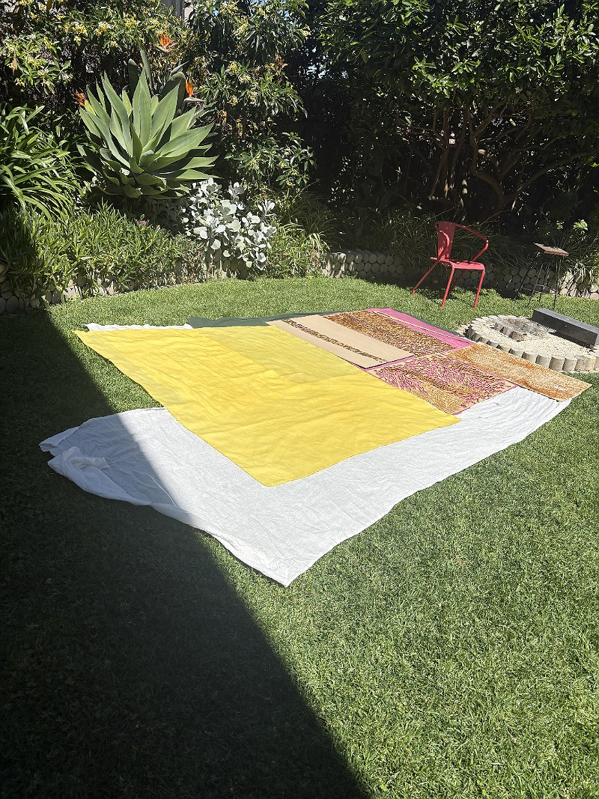
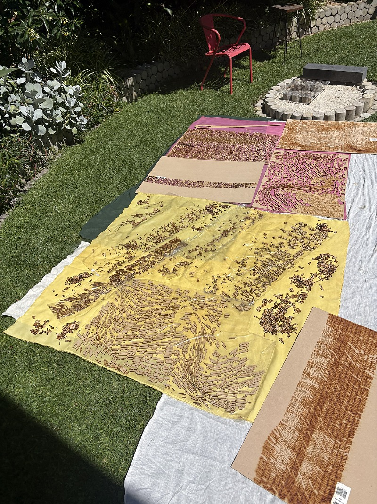
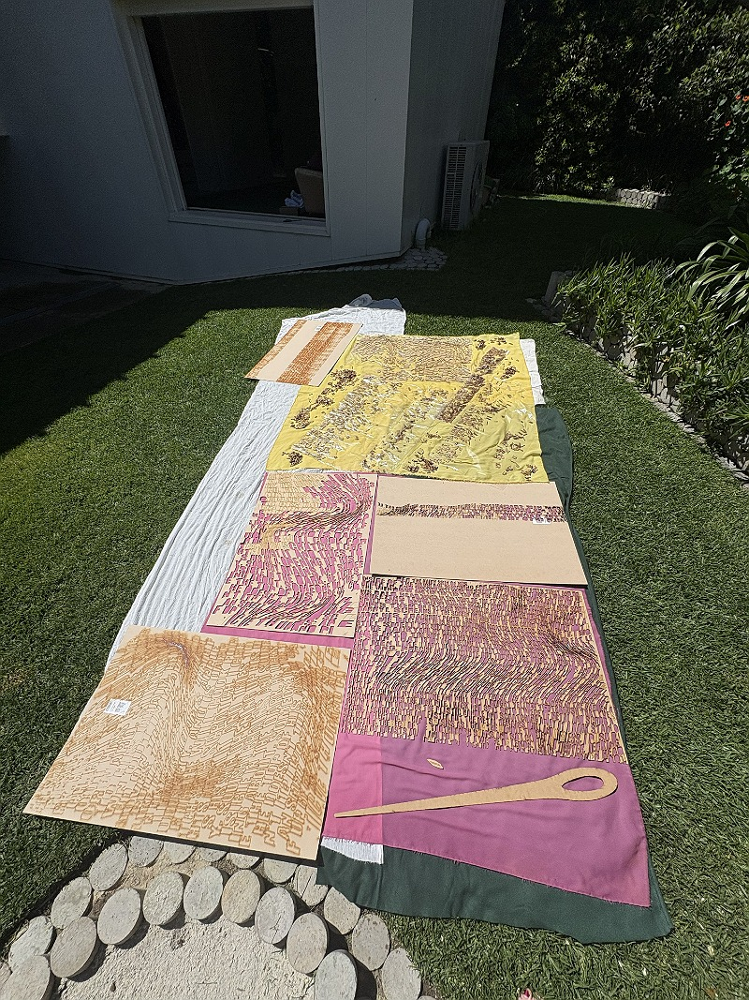
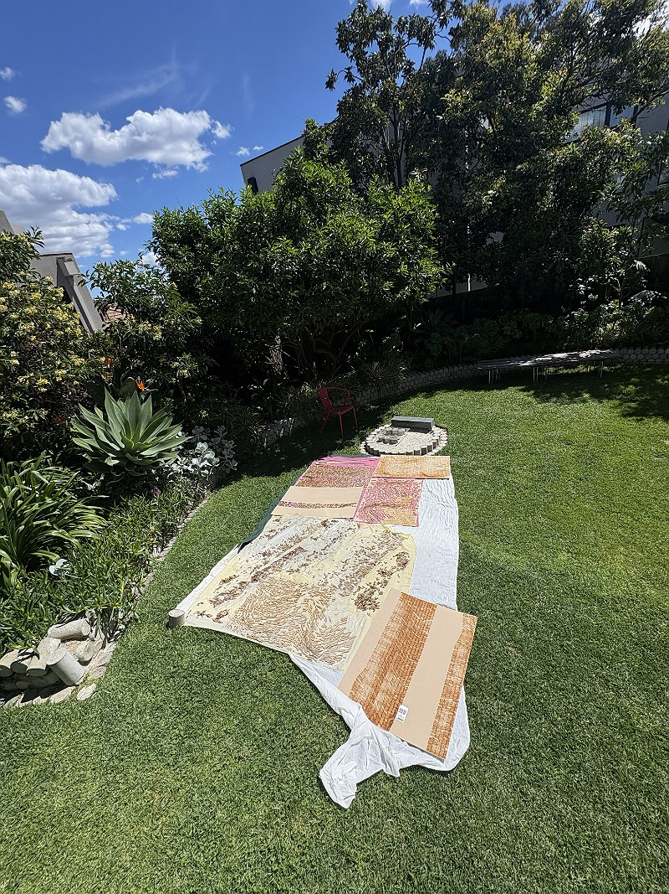
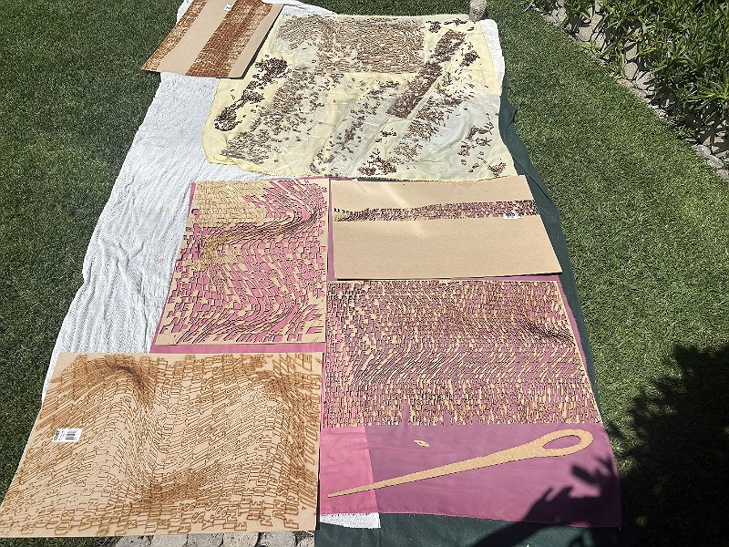
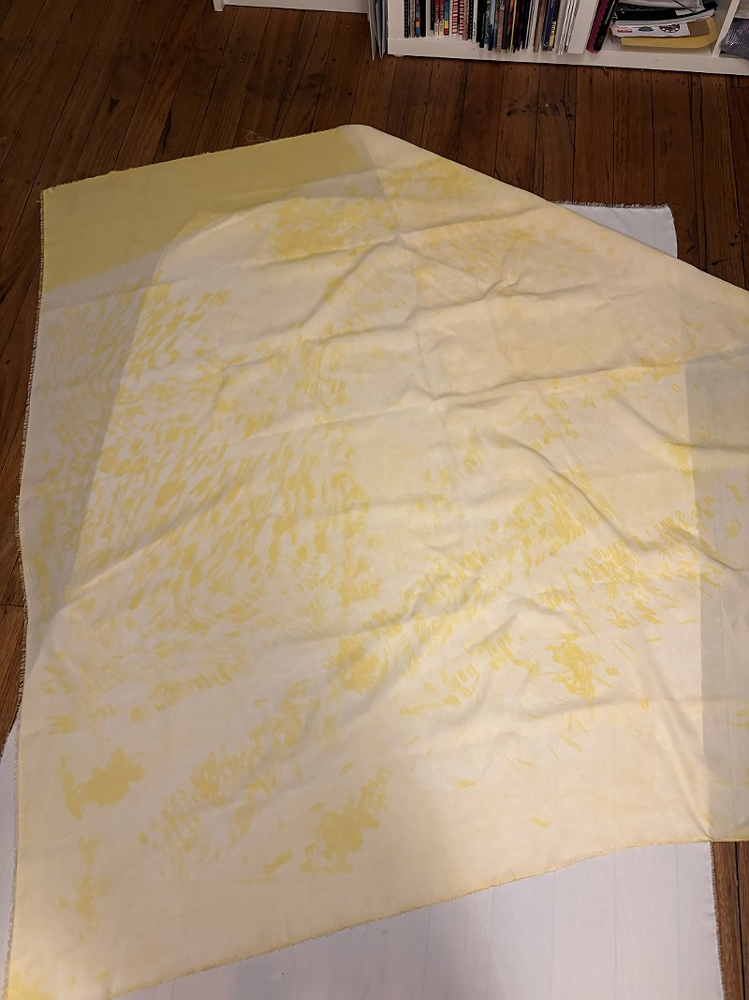
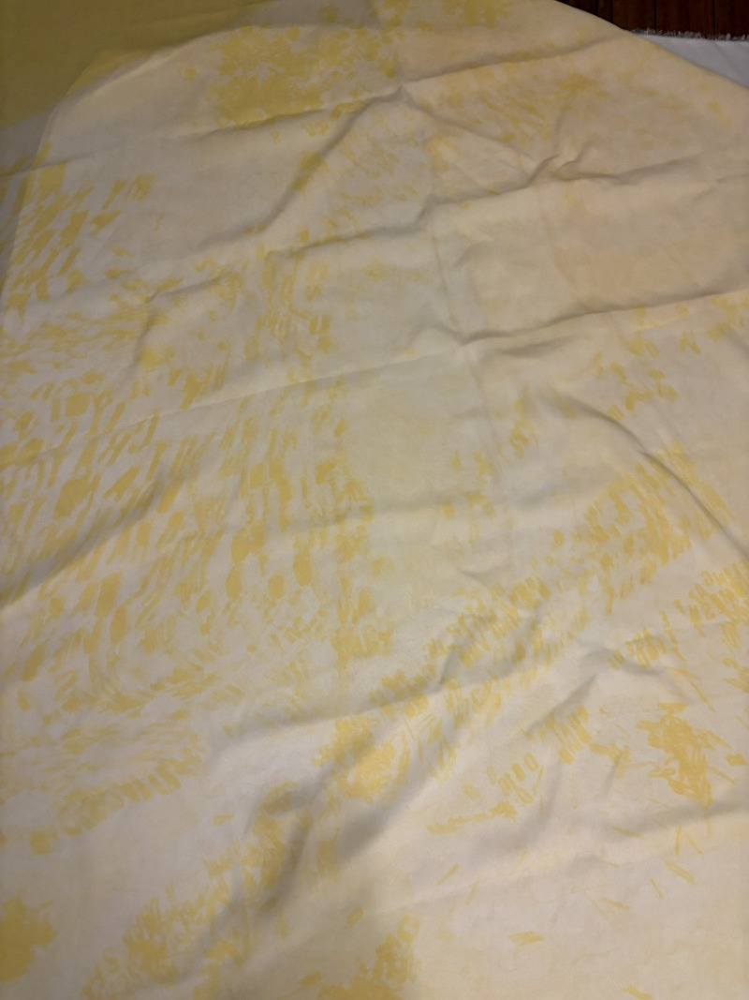
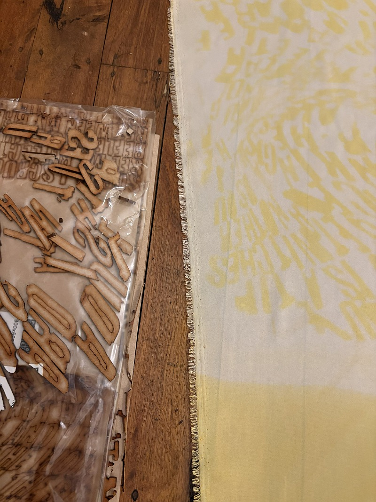

Like for my beetroot piece, I laid down some blankets to protect the fabric and then put out my turmeric fabric. On my turmeric dyed fabric, I used the mdf letters I had sandwiched in clear contact, and also scattered piles of the loose letters across the open patches. I then left the fabric to expose in the sun. It was outside for around three hours in UV 5-9 sun.








make space!